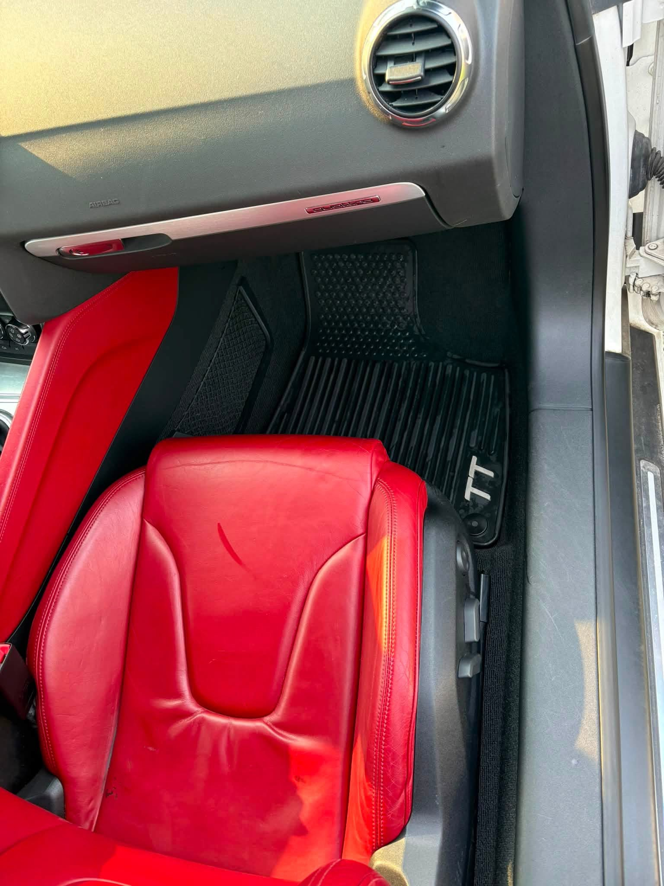

Gallery
Every car on this page was someone's daily driver.
Straight from my phone. No filters, no stock photos. What you see here is what your car gets.
Real cars, real results
The difference is not subtle.
Same car, same day. This is what a full interior detail actually looks like.

Console, footwell & door panel
Chrysler 300
Dash, wheel & driver floor
Chrysler 300Job walkthrough
Audi TT — red leather, black carpet, no mercy.
Worn leather, gritty mats, dust in every vent. The kind of car that looks fine from ten feet and rough from the driver's seat.


Finished interiors
Trucks, SUVs and everything in between.



More photos get added here after every job. [Ava — send new before/afters and they go straight in.]
Want yours in here?
Send me the vehicle and a preferred time. I'll confirm within 24 hours.